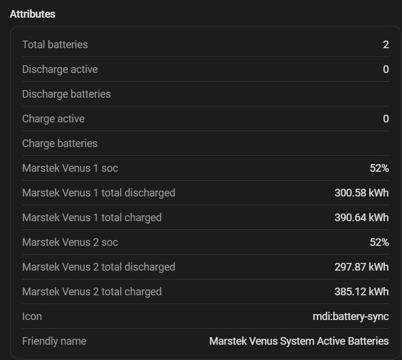

Varias baterías¶
Omnibattery coordina todas las baterías configuradas como un sistema, respetando a la vez los límites y controles de cada batería. Elige qué baterías deben participar y reparte la potencia solicitada entre las que son elegibles.
¿Lo necesito?¶
Úsalo si tienes más de una batería compatible y quieres un objetivo de red único, límites de potencia coordinados y un control claro sobre qué batería puede cargar o descargar.
No lo necesitas si tu instalación tiene una batería. Las entidades agregadas del sistema siguen reflejando esa batería.
Antes de empezar¶
- Añade todas las baterías a la misma entrada de configuración de Omnibattery. Una entrada admite hasta 10 baterías.
- Confirma que cada batería se actualiza de forma fiable e informa de estado de carga (SOC) y potencia.
- Decide si alguna batería necesita control manual o debe excluirse de una dirección.
Cómo activarlo¶
- Abre Ajustes → Dispositivos y servicios → Omnibattery → Configurar.
- Añade o revisa cada batería en la sección de configuración de baterías.
- Termina el formulario y deja que la integración se recargue.
- Abre el panel de Omnibattery y revisa Allow Charge, Allow Discharge, Manual Battery Control, Primary Battery y Charge Priority.
Este comportamiento es automático cuando la entrada de configuración contiene varias baterías; no hay un interruptor independiente para varias baterías.

Qué verás¶
Active Batteries identifica las baterías que están cargando, descargando, en reposo o bajo control manual. Non-Responsive Batteries identifica exclusiones temporales. Integration Status expone bloqueadores globales y por batería.
Cada batería tiene Allow Charge, Allow Discharge y Manual Battery Control. Las instalaciones con varias baterías también muestran Primary Battery y Charge Priority. Los opcionales System Max Charge Power y System Max Discharge Power limitan la solicitud combinada cuando se configuran límites de potencia del sistema.
La selección automática normalmente prefiere mayor SOC para descargar y menor SOC para cargar. Una batería puede permanecer en reposo mientras trabaja otra; es esperado cuando una unidad puede atender la solicitud con más eficiencia.
Si no funciona¶
| Síntoma | Causa probable | Qué comprobar |
|---|---|---|
| Una batería nunca participa | Dirección desactivada, control manual, prioridad de SOC o un límite | Active Batteries, interruptores Allow, modo manual y bloqueadores por batería |
| Una batería desaparece temporalmente | Fallo de comunicación o de potencia entregada | Non-Responsive Batteries y Reparaciones de Home Assistant |
| La potencia combinada es menor de la esperada | Tope de sistema o límite por batería | Entidades de límite de potencia de sistema y batería |
| Las baterías intercambian roles repetidamente | Ruido del medidor o histéresis de selección cerca de un límite | PD Control Quality, valores de SOC y perfil del controlador |
| El control manual de una batería lucha contra el automático | No se activó el control manual | Activa Manual Battery Control antes de escribir consignas sin procesar |
Consulta solución de problemas para comprobaciones por síntoma.
Detalles avanzados
Principio de eficiencia¶
Basándose en curvas de eficiencia Venus medidas, las baterías se activan solo cuando la potencia total supera el punto de cruce de eficiencia: la potencia a la que repartir la carga entre dos baterías es más eficiente que usar solo una. Usar menos baterías a mayor potencia es más eficiente que repartir la misma carga entre todas.
Los puntos de cruce (derivados de mediciones externas de η) son:
| Dirección | Cruce | % del máximo físico de 2500 W |
|---|---|---|
| Descarga | 1500 W | 60 % |
| Carga | 1750 W | 70 % |
El umbral de activación se calcula dinámicamente como crossover_W ÷ configured_max_W, limitado a [50 %, 95 %]. Esto significa que quien configura un límite de potencia menor por batería activa baterías adicionales más tarde (más cerca de su máximo configurado), lo que refleja correctamente que el rango de operación se mantiene dentro del pico de eficiencia de una sola batería.
Las siguientes mediciones muestran consumo/salida de potencia CC, potencia CA en el contador (pinza interna) y en el enchufe de pared (pinza externa), y la eficiencia resultante en cada nivel de potencia:
Carga
| % del máximo | Consigna (W) | CC interna (W) | CA interna (W) | CA externa (W) | η interna | η externa |
|---|---|---|---|---|---|---|
| 3 % | 63 | 41 | 58 | 68 | 70.7 % | 60.3 % |
| 5 % | 125 | 105 | 123 | 136 | 85.4 % | 77.2 % |
| 10 % | 250 | 232 | 247 | 262 | 93.9 % | 88.5 % |
| 15 % | 375 | 357 | 372 | 387 | 96.0 % | 92.2 % |
| 20 % | 500 | 481 | 497 | 513 | 96.8 % | 93.8 % |
| 25 % | 625 | 604 | 621 | 639 | 97.3 % | 94.5 % |
| 30 % | 750 | 727 | 743 | 766 | 97.8 % | 94.9 % |
| 35 % | 875 | 850 | 871 | 892 | 97.6 % | 95.3 % |
| 40 % | 1000 | 973 | 995 | 1019 | 97.8 % | 95.5 % |
| 45 % | 1125 | 1095 | 1120 | 1146 | 97.8 % | 95.5 % |
| 50 % | 1250 | 1245 | 1271 | 1274 | 98.0 % | 97.7 % |
| 55 % | 1375 | 1339 | 1369 | 1401 | 97.8 % | 95.6 % |
| 60 % | 1500 | 1460 | 1494 | 1530 | 97.7 % | 95.4 % |
| 65 % | 1625 | 1581 | 1618 | 1658 | 97.7 % | 95.4 % |
| 70 % | 1750 | 1702 | 1743 | 1786 | 97.6 % | 95.3 % |
| 75 % | 1875 | 1823 | 1868 | 1916 | 97.6 % | 95.1 % |
| 80 % | 2000 | 1942 | 1992 | 2044 | 97.5 % | 95.0 % |
| 85 % | 2125 | 2062 | 2117 | 2175 | 97.4 % | 94.8 % |
| 90 % | 2250 | 2183 | 2242 | 2304 | 97.4 % | 94.7 % |
| 95 % | 2375 | 2304 | 2366 | 2436 | 97.4 % | 94.6 % |
| 100 % | 2500 | 2424 | 2491 | 2567 | 97.3 % | 94.4 % |
Descarga
| % del máximo | Consigna (W) | CC interna (W) | CA interna (W) | CA externa (W) | η interna | η externa |
|---|---|---|---|---|---|---|
| 3 % | 63 | 80 | 63 | 60 | 78.8 % | 75.0 % |
| 5 % | 125 | 160 | 124 | 118 | 77.5 % | 73.8 % |
| 10 % | 250 | 284 | 249 | 243 | 87.7 % | 85.6 % |
| 15 % | 375 | 416 | 373 | 368 | 89.7 % | 88.5 % |
| 20 % | 500 | 550 | 498 | 494 | 90.5 % | 89.8 % |
| 25 % | 625 | 685 | 623 | 619 | 90.9 % | 90.4 % |
| 30 % | 750 | 820 | 747 | 745 | 91.1 % | 90.9 % |
| 35 % | 875 | 956 | 872 | 870 | 91.2 % | 91.0 % |
| 40 % | 1000 | 1092 | 997 | 996 | 91.3 % | 91.2 % |
| 45 % | 1125 | 1230 | 1121 | 1121 | 91.1 % | 91.1 % |
| 50 % | 1250 | 1369 | 1246 | 1246 | 91.0 % | 91.0 % |
| 55 % | 1375 | 1507 | 1370 | 1372 | 90.9 % | 91.0 % |
| 60 % | 1500 | 1647 | 1495 | 1497 | 90.8 % | 90.9 % |
| 65 % | 1625 | 1789 | 1620 | 1623 | 90.6 % | 90.7 % |
| 70 % | 1750 | 1931 | 1745 | 1748 | 90.4 % | 90.5 % |
| 75 % | 1875 | 2073 | 1869 | 1874 | 90.2 % | 90.4 % |
| 80 % | 2000 | 2218 | 1994 | 1999 | 89.9 % | 90.1 % |
| 85 % | 2125 | 2362 | 2118 | 2124 | 89.7 % | 89.9 % |
| 90 % | 2250 | 2508 | 2243 | 2250 | 89.4 % | 89.7 % |
| 95 % | 2375 | 2654 | 2368 | 2375 | 89.2 % | 89.5 % |
| 100 % | 2500 | 2801 | 2492 | 2501 | 89.0 % | 89.3 % |
Prioridades de selección¶
Descarga¶
Mayor SOC primero: la batería más cargada descarga primero para equilibrar el estado de carga en el sistema.
Carga¶
Menor SOC primero: la batería menos cargada recibe energía primero.
Histéresis¶
Para evitar la activación y desactivación de «ping-pong», se aplican tres niveles de histéresis:
| Histéresis | Valor | Descripción |
|---|---|---|
| SOC | 5 % | Una batería activa permanece activa hasta que otra la supera en 5% de SOC |
| Energía de vida útil | 2.5 kWh | Desempata el SOC usando energía acumulada de vida útil con ventaja para la batería activa |
| Potencia | 10 pp | Umbral de activación derivado del cruce de eficiencia; desactivación = activación − 10 puntos porcentuales |
Reparto de potencia¶
Tras seleccionar las baterías activas, la potencia total calculada por el controlador PD se reparte entre ellas proporcionalmente, respetando los límites individuales de potencia y SOC. La misma lógica de selección y reparto se aplica siempre que la integración solicita potencia a la flota, no solo durante el control normal de seguimiento de red; incluye carga solar y carga predictiva/desdela red.
También se pueden configurar topes globales opcionales en Advanced PD controller después de activar Enable system power limits:
| Ajuste | Efecto |
|---|---|
System Max Charge Power |
Limita la potencia de carga combinada de todas las baterías activas |
System Max Discharge Power |
Limita la potencia de descarga combinada de todas las baterías activas |
Establece cualquiera en 0 W para desactivar el tope de esa dirección. Estos límites se aplican después de determinar la elegibilidad por batería y antes de repartir la potencia, de modo que una batería puede seguir usando todo su límite individual cuando es la única activa. Si hay varias activas, el total combinado se limita al tope de sistema configurado. Las entidades de control deslizante correspondientes solo se crean cuando está activada la función.
Controles de carga/descarga por batería¶
Cada batería expone dos interruptores de software:
| Interruptor | Efecto |
|---|---|
Allow Charge |
Al desactivarlo, esta batería queda excluida de la carga automática. Puede seguir descargando si Allow Discharge está activado. |
Allow Discharge |
Al desactivarlo, esta batería queda excluida de la descarga automática. Puede seguir cargando si Allow Charge está activado. |
Estos interruptores no escriben directamente registros de control Modbus. Solo afectan al controlador PD automático de la integración. Si una batería está activa en la dirección desactivada, la integración envía esa batería a 0 W y el siguiente ciclo reasigna la potencia entre las baterías elegibles restantes.
El estado se almacena por batería como allow_charge y allow_discharge. Los valores ausentes tienen como predeterminado activado, por lo que las instalaciones existentes mantienen su comportamiento tras actualizar.
Control manual por batería¶
Cada batería también expone switch.*_battery_manual_mode. Al activarlo, Omnibattery primero envía y verifica una orden de 0 W, borra el modo forzado y las consignas de potencia de software de la integración, y retira esa batería del grupo automático. El estado del interruptor se conserva por batería, de modo que la exclusión sobrevive a un reinicio. La batería sigue siendo consultada y permanece incluida en la telemetría física de batería/red, pero no recibe consignas automáticas de potencia; la gestión de seguridad del driver y del BMS sigue activa.
Al desactivar el interruptor, la batería conserva el control manual mientras se verifica la orden final de reposo. Solo entonces vuelve al grupo automático y se programa un ciclo de control inmediato. Si falla el traspaso a reposo, el interruptor sigue activado y la batería permanece manual.
En drivers con registros (Marstek, ESPHome), las entidades sin procesar Force Mode, Set Charge Power y Set Discharge Power escriben directamente los registros del dispositivo, y el bucle de control reafirma esos registros en cada ciclo. Por tanto, escribir en ellas mientras la batería está bajo control automático se rechaza con un error que apunta a Manual Mode, en lugar de aceptarse y revertirse un segundo después. Activar el interruptor global Manual Mode o el Battery Manual Mode de esa batería libera la protección. Los registros de configuración de batería, como los cortes de SOC y los topes de potencia, no se ven afectados.
Este control es independiente del interruptor global Manual Mode. Por ejemplo, con dos baterías, A puede dejarse en modo manual con una potencia elegida por el usuario mientras B continúa automática. Si B ya está cargando, el controlador PD incluye la carga de red CA medida de A para que B reduzca su propia carga y el contador se mantenga en cero. Cuando las baterías automáticas ya no cargan, la carga de red intencionada de A se excluye de la realimentación para que B no descargue para compensarla. La potencia solar acoplada en CC no se incluye cuando el driver expone una lectura de potencia CA independiente.
Registro unificado de bloqueadores¶
Los permisos de carga y descarga se resuelven mediante un registro de bloqueadores en tiempo de ejecución. Los bloqueadores pueden ser globales o aplicarse a una batería. El controlador consulta este registro antes de retornos tempranos por banda muerta y sensor obsoleto, de modo que una orden activa se detiene en cuanto aparece un bloqueador.
Los bloqueadores globales incluyen retraso de carga solar, reglas de carga/descarga de franjas horarias, control de descarga basado en precios y pausas de cargador VE sin telemetría. Los bloqueadores por batería incluyen los interruptores Allow Charge y Allow Discharge, SOC máximo, SOC mínimo e histéresis de carga. Otras comprobaciones de disponibilidad como la exclusión por respaldo/fuera de red y por falta de respuesta siguen separadas del registro.
Los atributos de nivel superior charge_blocked y discharge_blocked informan del estado efectivo del sistema: pasan a true cuando hay un bloqueador global activo o cuando todas las baterías conocidas están bloqueadas en esa dirección. Los detalles por batería siguen visibles en battery_charge_blockers y battery_discharge_blockers.
El registro se expone en el sensor de diagnóstico Integration Status mediante estos atributos:
charge_blockeddischarge_blockedcharge_blockersdischarge_blockersbattery_charge_blockersbattery_discharge_blockers
Exclusión de batería sin respuesta¶
Cuando una batería no entrega de forma constante la potencia ordenada —por ejemplo, por un fallo de comunicación Modbus o una respuesta de autoprotección del firmware— la integración la detecta y la retira temporalmente del grupo activo.
Una batería se marca como sin respuesta cuando su salida medida es inferior al 5% de la consigna durante 3 ciclos de control consecutivos. Una vez marcada, entra en una ventana de exclusión de 5 minutos en la que no recibe órdenes nuevas y las baterías restantes absorben su parte de carga. Cuando expira la ventana, el contador de fallos se reinicia y la batería vuelve a ser elegible.
Las negativas a descargar con SOC bajo están exentas. En o por debajo de 20% SOC (o justo por encima del SOC mínimo configurado), el BMS puede cortar la descarga por sí mismo —por ejemplo, una celda débil que cae bajo carga— aunque el SOC informado siga por encima del mínimo. La batería confirma la orden pero entrega 0 W; se trata como un corte esperado del BMS y no como un fallo, así que sigue en el grupo. Esto refleja el manejo de corte del BMS a SOC alto en el lado de carga.
Este mecanismo evita que una sola batería defectuosa degrade silenciosamente el rendimiento del sistema sin alarmas ni intervención manual.